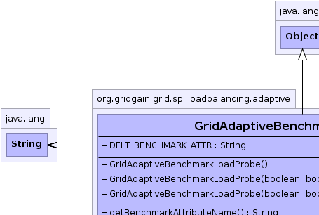
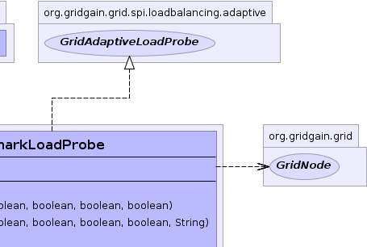
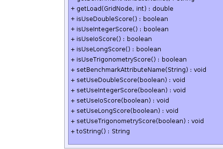
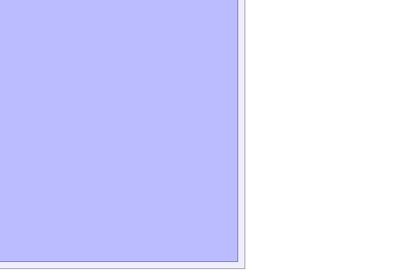

org.gridgain.grid.spi.loadbalancing.adaptive.GridAdaptiveBenchmarkLoadProbe
org.gridgain.grid.spi.loadbalancing.adaptive.GridAdaptiveBenchmarkLoadProbe
|
GridGain™ 3.5.0c
Community Edition |
|||||||||
| PREV CLASS NEXT CLASS | FRAMES NO FRAMES | |||||||||
| SUMMARY: NESTED | FIELD | CONSTR | METHOD | DETAIL: FIELD | CONSTR | METHOD | |||||||||
java.lang.Object
public class GridAdaptiveBenchmarkLoadProbe
Probe that uses GridLocalNodeBenchmark for specifying load for every node.
In order to use this probe, use should configure every grid node to start with
GridLocalNodeBenchmark as attribute (see GridConfiguration.getUserAttributes()
for more information).
You can initialize local node benchmarks by adding/uncommenting the following section in GridGain Spring XML file:
<property name="userAttributes">
<map>
<entry key="grid.node.benchmark">
<bean class="org.gridgain.grid.benchmarks.GridLocalNodeBenchmark" init-method="start"/>
</entry>
</map>
</property>
Here is an example of how load balancing SPI would be configured from Spring XML configuration:
<property name="loadBalancingSpi">
<bean class="org.gridgain.grid.spi.loadBalancing.adaptive.GridAdaptiveLoadBalancingSpi">
<property name="loadProbe">
<bean class="org.gridgain.grid.spi.loadBalancing.adaptive.GridAdaptiveBenchmarkLoadProbe">
<!-- Specify name of benchmark node attribute (the same as above). -->
<property name="benchmarkAttributeName" value="grid.node.benchmark"/>
<!-- Benchmarks scores to use. -->
<property name="useIntegerScore" value="true"/>
<property name="useLongScore" value="true"/>
<property name="useDoulbeScore" value="true"/>
<property name="useIoScore" value="false"/>
<property name="useTrigonometryScore" value="false"/>
</bean>
</property>
</bean>
</property>
Please make sure to properly initialize this probe to use exactly the scores you need in your grid. For example, if your jobs don't do any I/O, then you probably should disable I/O score. If you are not doing any trigonometry calculations, then you should disable trigonometry score.
| Wiki | |
| Forum |
|  |  |
|  |  |
| Field Summary | |
|---|---|
static String |
DFLT_BENCHMARK_ATTR
Default node attribute name for storing node benchmarks (value is 'grid.node.benchmark'). |
| Constructor Summary | |
|---|---|
GridAdaptiveBenchmarkLoadProbe()
Creates benchmark probe with all defaults. |
|
GridAdaptiveBenchmarkLoadProbe(boolean useIntScore,
boolean useLongScore,
boolean useDoubleScore,
boolean useTrigScore,
boolean useIoScore)
Creates benchmark probe which allows use to specify which scores to use. |
|
GridAdaptiveBenchmarkLoadProbe(boolean useIntScore,
boolean useLongScore,
boolean useDoubleScore,
boolean useTrigScore,
boolean useIoScore,
String benchmarkAttr)
Creates benchmark probe which allows use to specify which scores to use. |
|
| Method Summary | |
|---|---|
String |
getBenchmarkAttributeName()
Gets name of node attribute by which node benchmarks should be accessed. |
double |
getLoad(GridNode node,
int jobsSentSinceLastUpdate)
Calculates load value for a given node. |
boolean |
isUseDoubleScore()
Gets flag indicating whether double score should be used
for calculation of node load. |
boolean |
isUseIntegerScore()
Gets flag indicating whether integer score should be used
for calculation of node load. |
boolean |
isUseIoScore()
Gets flag indicating whether I/O score should be used
for calculation of node load. |
boolean |
isUseLongScore()
Gets flag indicating whether long score should be used
for calculation of node load. |
boolean |
isUseTrigonometryScore()
Gets flag indicating whether trigonometry score should be used
for calculation of node load. |
void |
setBenchmarkAttributeName(String benchmarkAttr)
Sets name of node attribute by which node benchmarks should be accessed. |
void |
setUseDoubleScore(boolean useDoubleScore)
Sets flag indicating whether double score should be used
for calculation of node load. |
void |
setUseIntegerScore(boolean useIntScore)
Sets flag indicating whether integer score should be used
for calculation of node load. |
void |
setUseIoScore(boolean useIoScore)
Sets flag indicating whether I/O score should be used
for calculation of node load. |
void |
setUseLongScore(boolean useLongScore)
Sets flag indicating whether long score should be used
for calculation of node load. |
void |
setUseTrigonometryScore(boolean useTrigScore)
Sets flag indicating whether trigonometry score should be used
for calculation of node load. |
String |
toString()
|
| Methods inherited from class java.lang.Object |
|---|
clone, equals, finalize, getClass, hashCode, notify, notifyAll, wait, wait, wait |
| Field Detail |
|---|
public static final String DFLT_BENCHMARK_ATTR
'grid.node.benchmark'). See GridNode.attribute(String)
for more information.
| Constructor Detail |
|---|
public GridAdaptiveBenchmarkLoadProbe()
GridLocalNodeBenchmark class will be used.
public GridAdaptiveBenchmarkLoadProbe(boolean useIntScore,
boolean useLongScore,
boolean useDoubleScore,
boolean useTrigScore,
boolean useIoScore)
GridLocalNodeBenchmark for more information on which scores
are available and how they are calculated.
useIntScore - Flag indicating whether to use integer score.useLongScore - Flag indicating whether to use long score.useDoubleScore - Flag indicating whether to use double score.useTrigScore - Flag indicating whether to use trigonometry score.useIoScore - Flag indicating whether to use I/O score.
public GridAdaptiveBenchmarkLoadProbe(boolean useIntScore,
boolean useLongScore,
boolean useDoubleScore,
boolean useTrigScore,
boolean useIoScore,
String benchmarkAttr)
GridLocalNodeBenchmark for more information on which scores
are available and how they are calculated.
This constructor also allows to specify the name of node attribute by which node benchmarks should be accessed.
useIntScore - Flag indicating whether to use integer score.useLongScore - Flag indicating whether to use long score.useDoubleScore - Flag indicating whether to use double score.useTrigScore - Flag indicating whether to use trigonometry score.useIoScore - Flag indicating whether to use I/O score.benchmarkAttr - Name of node attribute by which node benchmarks should be accessed.| Method Detail |
|---|
public String getBenchmarkAttributeName()
GridAdaptiveBenchmarkLoadProbe.DFLT_BENCHMARK_ATTR name is used.
public void setBenchmarkAttributeName(String benchmarkAttr)
GridAdaptiveBenchmarkLoadProbe.DFLT_BENCHMARK_ATTR name is used.
benchmarkAttr - Name of node attribute by which node benchmarks should be accessed.public boolean isUseIntegerScore()
integer score should be used
for calculation of node load.
integer score should be used
for calculation of node load.public void setUseIntegerScore(boolean useIntScore)
integer score should be used
for calculation of node load.
useIntScore - Flag indicating whether integer score should be used
for calculation of node load.public boolean isUseLongScore()
long score should be used
for calculation of node load.
long score should be used
for calculation of node load.public void setUseLongScore(boolean useLongScore)
long score should be used
for calculation of node load.
useLongScore - Flag indicating whether long score should be used
for calculation of node load.public boolean isUseDoubleScore()
double score should be used
for calculation of node load.
double score should be used
for calculation of node load.public void setUseDoubleScore(boolean useDoubleScore)
double score should be used
for calculation of node load.
useDoubleScore - Flag indicating whether double score should be used
for calculation of node load.public boolean isUseTrigonometryScore()
trigonometry score should be used
for calculation of node load.
trigonometry score should be used
for calculation of node load.public void setUseTrigonometryScore(boolean useTrigScore)
trigonometry score should be used
for calculation of node load.
useTrigScore - Flag indicating whether trigonometry score should be used
for calculation of node load.public boolean isUseIoScore()
I/O score should be used
for calculation of node load.
I/O score should be used
for calculation of node load.public void setUseIoScore(boolean useIoScore)
I/O score should be used
for calculation of node load.
useIoScore - Flag indicating whether I/O score should be used
for calculation of node load.
public double getLoad(GridNode node,
int jobsSentSinceLastUpdate)
GridNode#getMetrics() method. For example, load can be calculated
based on job execution time or number of active jobs, or CPU/Heap utilization.
Note that if this method returns a value of 0,
then implementation will assume that load value is simply not available and
will try to calculate an average of load values for other nodes. If such
average cannot be obtained (all node load values are 0), then a value
of 1 will be used.
getLoad in interface GridAdaptiveLoadProbenode - Grid node to calculate load for.jobsSentSinceLastUpdate - Number of jobs sent to this node since
last metrics update. This parameter may be useful when
implementation takes into account the current job count on a node.
public String toString()
toString in class Object
|
GridGain™ 3.5.0c
Community Edition |
|||||||||
| PREV CLASS NEXT CLASS | FRAMES NO FRAMES | |||||||||
| SUMMARY: NESTED | FIELD | CONSTR | METHOD | DETAIL: FIELD | CONSTR | METHOD | |||||||||
|
GridGain - High Performance Cloud Computing
|
|

|
|